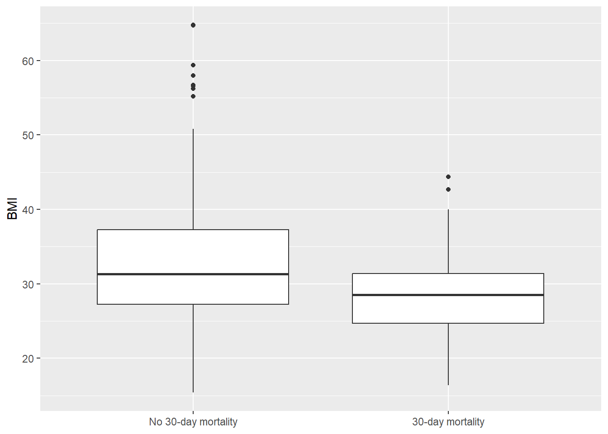

Exercise 1 Solutions: Start a QCRC Mini-Manuscript
Instructor note
This is one acceptable solution path for Exercise 1. It uses the recommended QCRC 30-day mortality question. Student reports may choose different exposures or a different course dataset if they preserve the required deliverables.
Task 1 solution: Create a report draft
Students should start from exercises/qcrc-mini-manuscript-starter.qmd, save a working copy, and render it. The starter file is already a valid solution skeleton because it contains Introduction, Methods, Results, Discussion, and Appendix sections.
Task 2 solution: Load and inspect QCRC
Code
to_numeric <- function(x) {
as.numeric(dplyr::na_if(as.character(x), "."))
}
qcrc <- readxl::read_xlsx(
here::here("data", "QCRC_FINAL_Deidentified.xlsx"),
sheet = "Main_Dataset"
) |>
janitor::clean_names() |>
dplyr::mutate(
bmi = to_numeric(bmi),
crp = to_numeric(crp),
d_dimer = to_numeric(d_dimer),
x30d_mortality = factor(
x30d_mortality,
levels = c(0, 1),
labels = c("No 30-day mortality", "30-day mortality")
),
intubated = factor(intubated, levels = c(0, 1), labels = c("No", "Yes")),
remdesivir_or_placebo = factor(
remdesivir_or_placebo,
levels = c(0, 1),
labels = c("Placebo", "Remdesivir")
),
female = factor(female),
race = factor(race)
)
data.frame(rows = nrow(qcrc), columns = ncol(qcrc)) |>
knitr::kable(caption = "QCRC main dataset dimensions.")| rows | columns |
|---|---|
| 288 | 37 |
[1] "patient_deid" "decatur_transfer" "age" "female"
[5] "race" "died" "x30d_mortality" "x60d_mortality"
[9] "death_date_deid" "icu_los" Code
analysis_vars <- c(
"x30d_mortality",
"age",
"bmi",
"female",
"intubated",
"remdesivir_or_placebo"
)
missing_counts <- sapply(qcrc[analysis_vars], \(x) sum(is.na(x)))
data.frame(
variable = names(missing_counts),
missing = as.integer(missing_counts)
) |>
knitr::kable(caption = "Missingness check for Exercise 1 variables.")| variable | missing |
|---|---|
| x30d_mortality | 0 |
| age | 0 |
| bmi | 3 |
| female | 0 |
| intubated | 0 |
| remdesivir_or_placebo | 0 |
Example Methods sentence:
We analyzed the
Main_Datasetsheet from the deidentified QCRC COVID-19 ICU workbook. We cleaned variable names, converted selected lab and BMI variables from text to numeric values, and recoded binary variables as factors for reporting.
Task 3 solution: Define the manuscript variables
Example introduction:
Severe COVID-19 outcomes vary across patient characteristics and clinical factors. In this report, we ask whether age, BMI, intubation, and treatment group are associated with 30-day mortality among patients in the QCRC ICU dataset. We hypothesize that older age and intubation will be associated with higher odds of 30-day mortality. This analysis is descriptive and associational; it should not be interpreted as proving causality.
Task 4 solution: Descriptive table or figure
Code
qcrc |>
dplyr::group_by(x30d_mortality) |>
dplyr::summarise(
n = dplyr::n(),
mean_age = round(mean(age, na.rm = TRUE), 1),
mean_bmi = round(mean(bmi, na.rm = TRUE), 1),
intubated_percent = round(mean(intubated == "Yes", na.rm = TRUE) * 100, 1),
.groups = "drop"
) |>
knitr::kable(caption = "Selected characteristics by 30-day mortality status.")| x30d_mortality | n | mean_age | mean_bmi | intubated_percent |
|---|---|---|---|---|
| No 30-day mortality | 194 | 60.1 | 33.1 | 68.6 |
| 30-day mortality | 94 | 70.4 | 28.5 | 84.0 |
Code

Example interpretation:
Patients with and without 30-day mortality can be compared on age, BMI, and intubation status before fitting a model. The descriptive table is not an adjusted analysis, but it helps identify patterns and missingness that should be considered in Exercise 2.
Task 5 solution: First-pass analysis
Welch Two Sample t-test
data: bmi by x30d_mortality
t = 5.2411, df = 263.87, p-value = 3.271e-07
alternative hypothesis: true difference in means between group No 30-day mortality and group 30-day mortality is not equal to 0
95 percent confidence interval:
2.879238 6.344378
sample estimates:
mean in group No 30-day mortality mean in group 30-day mortality
33.12670 28.51489 Code
Call:
glm(formula = x30d_mortality ~ age + bmi + intubated + remdesivir_or_placebo,
family = binomial, data = qcrc)
Coefficients:
Estimate Std. Error z value Pr(>|z|)
(Intercept) -2.31314 1.19892 -1.929 0.05369 .
age 0.04436 0.01114 3.983 6.81e-05 ***
bmi -0.07458 0.02301 -3.242 0.00119 **
intubatedYes 1.46234 0.37355 3.915 9.05e-05 ***
remdesivir_or_placeboRemdesivir -1.04033 0.41672 -2.496 0.01254 *
---
Signif. codes: 0 '***' 0.001 '**' 0.01 '*' 0.05 '.' 0.1 ' ' 1
(Dispersion parameter for binomial family taken to be 1)
Null deviance: 361.41 on 284 degrees of freedom
Residual deviance: 300.08 on 280 degrees of freedom
(3 observations deleted due to missingness)
AIC: 310.08
Number of Fisher Scoring iterations: 5Code
or_table <- data.frame(
term = names(coef(model_30d)),
odds_ratio = exp(coef(model_30d)),
exp(confint.default(model_30d)),
check.names = FALSE
)
names(or_table) <- c("term", "odds_ratio", "conf_low", "conf_high")
or_table |>
dplyr::mutate(dplyr::across(where(is.numeric), \(x) round(x, 2))) |>
knitr::kable(caption = "First-pass adjusted odds ratios.")| term | odds_ratio | conf_low | conf_high | |
|---|---|---|---|---|
| (Intercept) | (Intercept) | 0.10 | 0.01 | 1.04 |
| age | age | 1.05 | 1.02 | 1.07 |
| bmi | bmi | 0.93 | 0.89 | 0.97 |
| intubatedYes | intubatedYes | 4.32 | 2.08 | 8.98 |
| remdesivir_or_placeboRemdesivir | remdesivir_or_placeboRemdesivir | 0.35 | 0.16 | 0.80 |
Example interpretation:
The logistic regression estimates adjusted associations with 30-day mortality. Because this is an observational-style course exercise with limited cleaning and variable review, the estimates should be treated as a first-pass signal rather than a definitive clinical conclusion.
Task 6 solution: Mini-manuscript draft
Expected draft structure:
- Introduction: one paragraph with question and hypothesis.
- Methods: data source, variable cleaning, and analysis choices.
- Results: one descriptive table or figure, one test or model, and a short interpretation.
- Discussion: main takeaway, limitation, and next step for Exercise 2.
Advanced task solution outlines
- Workbook inventory: use
readxl::excel_sheets(),lapply(),nrow(), andncol()to build a sheet-level table. - Helper summary function: write
summarize_numeric <- function(data, var)or use a vector input such assummarize_numeric <- function(x). - Sensitivity endpoint: refit the same code with
diedorx60d_mortalityafter recoding that endpoint as a factor. - Alternate dataset: require the same question, data, descriptive result, analysis, interpretation, and limitation structure.